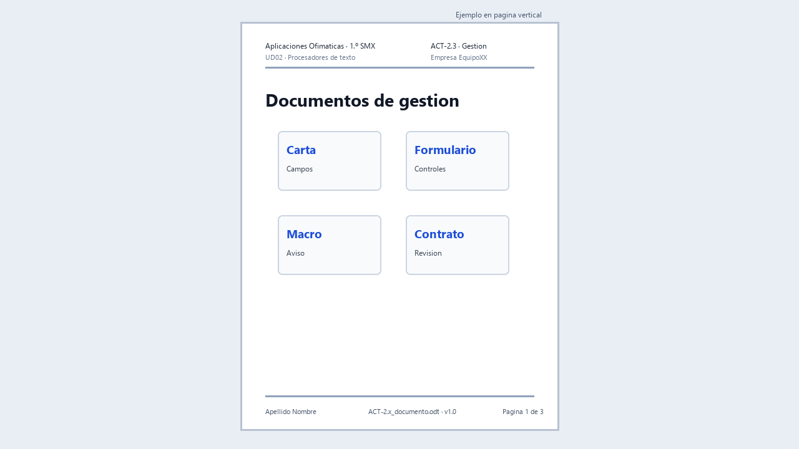

ACT-2.3 · Documentos de gestión

Ejemplo visual orientativo: no hay que copiarlo exactamente, pero muestra las cuatro piezas que deben funcionar como documentos reales.
Tarea en Aules: ACT-2.3 · Documentos de gestión
Archivo: ACT-2.3_apellido_nombre_gestion.zip · Individual · 4 h.
Encargo
La empresa necesita documentos repetitivos y revisables: cartas para clientes, formularios de solicitud, pequeños automatismos y contratos con cambios controlados.
Vas a crear un paquete de documentos de gestión utilizando datos ficticios y cuidando compatibilidad, protección de datos y revisión.
Parte 1 · Carta combinada
- Crea una tabla con cinco clientes ficticios.
- Diseña una carta base con la identidad de empresa.
- Inserta campos de combinación.
- Genera una vista previa de varios destinatarios.
- Exporta una muestra a PDF.
Parte 2 · Formulario
- Crea un formulario de solicitud de soporte o alta de cliente.
- Incluye campos de texto, lista o casillas.
- Protege o prepara el documento para ser rellenado.
- Exporta a PDF si el formulario lo permite.
- Prueba que se puede completar.
Parte 3 · Macro documentada
Graba o prepara una macro sencilla y segura. Por ejemplo:
- Aplicar formato de aviso.
- Insertar un bloque de datos de empresa.
- Limpiar dobles espacios.
- Crear una tabla de seguimiento.
La macro debe probarse en una copia y explicarse con lenguaje claro.
Parte 4 · Contrato revisado
- Abre un contrato breve o documento de condiciones.
- Activa control de cambios.
- Realiza varias correcciones justificadas.
- Añade dos comentarios.
- Genera una versión revisada y una versión limpia.
- Comprueba compatibilidad
DOCXsi se solicita.
Entrega
Un ZIP individual con:
- Carta base y muestra PDF.
- Fuente de datos ficticia.
- Formulario editable y PDF si procede.
- Documento con macro y nota explicativa.
- Contrato con cambios y contrato limpio.
- Nota de compatibilidad y protección de datos.
Evaluación
CA: RA2.a, RA2.d, RA2.e y RA2.f.
Se valorará que los documentos sean útiles para una empresa real, que los datos sean ficticios, que la revisión sea trazable y que no se habiliten macros desconocidas.
Guion completo y materiales de partida
Lee Documentos de gestión, donde se explican registro, campo, control de formulario y macro. Prepara cuatro subcarpetas: 01_carta, 02_formulario, 03_macro y 04_revision.
1. Carta: de cinco filas a cinco comunicaciones
Crea una hoja con encabezados Nombre, Empresa, Poblacion, Servicio y Equipo. Usa los tres registros de ejemplo de la teoría y añade dos inventados. Comprueba que cada fila describe un cliente y que no hay filas vacías entre registros.
Texto base que debes adaptar: «Hola, [Nombre]. Te informamos de que nuestra empresa ha preparado el servicio [Servicio] para el equipo [Equipo] de [Empresa]. Para solicitar asistencia, utiliza el formulario de soporte».
- Crea la carta desde la plantilla.
- Conecta la hoja mediante el asistente de combinación.
- Sustituye cada marcador por un campo real de la fuente, no por texto escrito manualmente.
- Recorre los cinco registros y revisa que nombre, servicio y equipo correspondan a la misma fila.
- Genera el resultado combinado y una muestra PDF. Conserva carta base y hoja para poder repetirlo.
Comprobación: cambia el servicio de un cliente en la hoja y vuelve a generar. Solo su carta debe reflejar ese cambio. Si todas muestran el mismo nombre, revisa que hayas generado registros distintos y no repetido una copia de la vista previa.
2. Formulario: construir y rellenar
Incluye etiquetas claras para equipo, descripción, fecha, tipo de incidencia, prioridad y confirmación de revisión. Usa texto para la descripción, lista para tipo y casilla para confirmación. Si incorporas prioridad mediante botones de opción, agrúpalos para permitir una sola elección.
Activa controles de formulario y modo diseño. Crea los controles, asigna nombres como equipo y descripcion, configura opciones y alinea. Desactiva diseño y rellena una solicitud de prueba. Exporta como PDF rellenable cuando corresponda y vuelve a abrir una copia guardada con respuestas.
Resultado esperado: otra persona puede rellenar sin preguntarte dónde escribir. Una línea dibujada no cuenta como campo interactivo. Anota visor usado, si permitió rellenar y si conservó los datos.
3. Macro: una tarea pequeña que puedas demostrar
Usa el ensayo de inserción de aviso explicado en la teoría. Graba en una copia, guarda la macro en el documento de prueba y ejecútala en un párrafo vacío. No habilites macros ajenas para completar la actividad.
Completa esta ficha:
Nombre de la macro:
Tarea que automatiza:
Dónde está guardada:
Cómo se ejecuta:
Qué debe ocurrir:
Qué ocurrió en mi prueba:
Limitación detectada:
Cómo volver atrás si el resultado no es el esperado:
Si el grabador de tu instalación no está disponible o no registra una acción, deja constancia del problema y resuélvelo con el docente antes de dar la parte por terminada.
4. Revisión: dos versiones con funciones distintas
Usa el documento de condiciones facilitado por el docente. Para ensayar previamente puedes usar el texto ficticio de la teoría, identificado como ejercicio.
- Conserva el original y crea una copia para revisión.
- Activa control de cambios. Haz una corrección de redacción y una propuesta de contenido; explica su motivo.
- Añade dos comentarios concretos: qué revisar y por qué.
- Guarda la versión con cambios visibles.
- Crea otra copia. Acepta o rechaza cada propuesta con criterio y resuelve comentarios.
- Guarda la versión limpia. Si se prueba DOCX, registra suite y problemas observados; corrige y vuelve a abrir.
Registro de pruebas para el ZIP
| Pieza | Prueba | Resultado | Corrección |
|---|---|---|---|
| Carta | Primer y último registro | [Qué aparece] | [Si hubo fallo] |
| Formulario | Rellenar, guardar y reabrir | [Visor y resultado] | [Si hubo fallo] |
| Macro | Ejecutar en copia | [Acción real] | [Límite o cambio] |
| Revisión | Abrir versión limpia | [Cambios pendientes sí/no] | [Cómo se resolvieron] |
Incluye las fuentes y resultados de las cuatro piezas. El registro de pruebas permite explicar qué funciona; no marques «correcto» sin realizar la prueba.